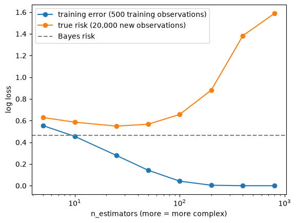

Today’s goals (see the exercise for the full list):
Why we need cross validation, and why it beats training error for choosing a model.
Why training error is too optimistic, and why this gets worse as models get more complex.
What CV error is actually an estimate of.
What CV needs in order to work.
How the sizes of the training and validation sets affect the bias and variance of the estimate.
How the number of folds \(K\) affects bias, variance and computation.
This presentation is adapted from Erez Buchweitz’s cross validation lab.
LLM assistance was used during the elaboration of this presentation and the exercise.
1 Estimating the risk
We have training data \(\mathcal{T} = (\boldsymbol{X}, \boldsymbol{y})\), with \(\boldsymbol{X}\in\mathbb{R}^{N \times P}\) and \(\boldsymbol{y}\in\mathbb{R}^N\), comprising independent and identically distributed (IID) observations, and we fit a prediction model \(\hat f\) on \(\mathcal{T}\). Its risk is the expected loss on a new observation \((\boldsymbol{x}, y)\) drawn from the same distribution: \[
\text{Err}_\mathcal{T} = \mathbb{E}\left[\mathscr{L}(\hat f(\boldsymbol{x}), y) \mid \mathcal{T}\right].
\] This depends on the particular training set \(\mathcal{T}\) we got. Averaging over random training sets of size \(N\) gives the expected risk\(\text{Err} = \mathbb{E}_\mathcal{T}[\text{Err}_\mathcal{T}]\) (ESL Section 7.4).
We want to estimate the risk because:
We want to have a sense of how good \(\hat f\) is before we deploy it.
We want to compare two candidate models \(\hat f_1\) and \(\hat f_2\) and choose the best among them.
We want to optimize hyperparameters of \(\hat f\).
1.1 A practice world
In real life we can never compute \(\text{Err}_\mathcal{T}\), so we cannot check how good our estimates of it are. In this lab we use a simulated binary classification problem in which we know the true probability \(p(\boldsymbol{x}) = P(y = 1 \mid \boldsymbol{x})\). For a model that predicts probabilities \(q(\boldsymbol{x})\), the log loss is \(\mathscr{L}(q(\boldsymbol{x}), y) = -y \log q(\boldsymbol{x}) - (1-y) \log(1 - q(\boldsymbol{x}))\), and its risk is \[
\text{Err}_\mathcal{T} = \mathbb{E}_{\boldsymbol{x}}\left[-p(\boldsymbol{x}) \log q(\boldsymbol{x}) - (1 - p(\boldsymbol{x})) \log (1 - q(\boldsymbol{x}))\right],
\] where \(p\) is the true probability and \(q\) is the model’s prediction.
How do we compute this expectation? We draw a large sample of \(M = 20{,}000\)new feature vectors \(\boldsymbol{x}_1, \dots, \boldsymbol{x}_M\) from the same distribution, which the model never saw during training, and average: \[
\text{Err}_\mathcal{T} \approx \frac{1}{M} \sum_{m=1}^M \left[-p(\boldsymbol{x}_m) \log q(\boldsymbol{x}_m) - (1 - p(\boldsymbol{x}_m)) \log (1 - q(\boldsymbol{x}_m))\right].
\] This is the log loss on a huge test set, with one change: instead of a random label \(y_m\), we use its probability \(p(\boldsymbol{x}_m)\). Given \(\boldsymbol{x}\), the log loss averaged over the random label is exactly \(-p(\boldsymbol{x}) \log q(\boldsymbol{x}) - (1 - p(\boldsymbol{x})) \log(1 - q(\boldsymbol{x}))\), so this removes the noise from the labels. simulator.py does this computation in true_risk(model), always with the same 20,000 feature vectors. In real life we never know \(p(\boldsymbol{x})\) and never have unlimited new data, which is why we need the estimates in the rest of this lab.
import sysimport numpy as npimport matplotlib.pyplot as pltimport lightgbm as lgbfrom sklearn.metrics import log_loss, make_scorerfrom sklearn.model_selection import KFold, train_test_split, cross_val_score, cross_validatesys.path.insert(0, "../../datasets/cv_lab") # in your notebook: download simulator.py as in the exercisefrom simulator import simulate, true_risk, bayes_riskX, y = simulate(500, seed=7)model = lgb.LGBMClassifier(n_jobs=1, verbosity=-1).fit(X, y)risk, se = true_risk(model, return_se=True)print(f"true risk of LightGBM with default settings: {risk:.3f} (standard error: {se:.4f})")print(f"risk of always predicting 0.5: {np.log(2):.3f}")print(f"Bayes risk (predicting p(x) exactly): {bayes_risk():.3f}")
true risk of LightGBM with default settings: 0.657 (standard error: 0.0028)
risk of always predicting 0.5: 0.693
Bayes risk (predicting p(x) exactly): 0.465
The standard error is tiny, so 20,000 new observations are enough to average out the noise. In the rest of the lab, true_risk(model) plays the role of the error on all future data: the quantity we are trying to estimate, but could never compute in real life.
2 Training error
The simplest estimate of the risk averages the loss over the training set itself: \[
\widehat{\text{err}}_{\text{train}} = \frac{1}{N}\sum_{n=1}^N \mathscr{L}(\hat f(\boldsymbol{X}_{n,:}), \boldsymbol{y}_n).
\] This is a biased estimator: it is too optimistic. The same data is used to fit \(\hat f\) and to evaluate it, and \(\hat f\) has adapted to the noise in those particular labels. ESL (Section 7.4, eq. 7.21, p. 229) makes this precise: on average, training error underestimates the in-sample error by \[
\omega = \frac{2}{N}\sum_{n=1}^N \text{Cov}(\hat y_n, y_n),
\] which holds for squared error, 0-1 and log loss (for log loss, \(\hat y_n\) is the fitted probability). “The amount by which training error underestimates the true error depends on how strongly \(y_i\) affects its own prediction. The harder we fit the data, the greater \(\text{Cov}(\hat y_i, y_i)\) will be, thereby increasing the optimism.”
An extreme example: \(N = 1{,}000\) observations and \(P = 1{,}000{,}000\) features that are all independent of the target, and \(\hat f\) fits OLS on the feature most correlated with the target in the training set. Out of a million features, one is likely to be highly correlated with the target by chance, so the training error is low; but the test predictions are random.
Below, we make a LightGBM model more complex by adding more trees (n_estimators). For each number of trees, we fit the model on our 500 training observations and compute two numbers:
the training error: the log loss on the same 500 observations the model was fit on,
the true risk: true_risk(model), computed on 20,000 new observations as above.
n_trees = [5, 10, 25, 50, 100, 200, 400, 800]train_err, risk = [], []for n in n_trees: model = lgb.LGBMClassifier(n_estimators=n, n_jobs=1, verbosity=-1).fit(X, y) train_err.append(log_loss(y, model.predict_proba(X)[:, 1])) risk.append(true_risk(model))plt.plot(n_trees, train_err, "o-", label="training error (500 training observations)")plt.plot(n_trees, risk, "o-", label="true risk (20,000 new observations)")plt.axhline(bayes_risk(), color="gray", ls="--", label="Bayes risk")plt.xscale("log"); plt.xlabel("n_estimators (more = more complex)"); plt.ylabel("log loss")plt.legend(); plt.show()

Training error keeps going down to 0, while the true risk is minimized at a moderate number of trees and then gets much worse. Choosing the number of trees by minimizing training error would pick the most overfit model. We need an estimate that uses data the model has not seen.
3 Validation error
We split the training data into two non-overlapping sets \((\boldsymbol{X}_{\text{train}},\boldsymbol{y}_{\text{train}})\) and \((\boldsymbol{X}_{\text{valid}}, \boldsymbol{y}_{\text{valid}})\) comprising \(N_{\text{train}}\) and \(N_{\text{valid}}\) observations, respectively. We fit \(\hat f\) on \((\boldsymbol{X}_{\text{train}}, \boldsymbol{y}_{\text{train}})\) and estimate the risk by averaging the loss over the validation set: \[
\widehat{\text{err}}_{\text{valid}} = \frac{1}{N_{\text{valid}}}\sum_{n=1}^{N_{\text{valid}}} \mathscr{L}\left(\hat f((\boldsymbol{X}_{\text{valid}})_{n,:}), (\boldsymbol{y}_{\text{valid}})_{n}\right).
\]
Because the validation observations are new to \(\hat f\), this is an unbiased estimator of the risk of \(\hat f\), the model trained on \(N_{\text{train}}\) observations. But we eventually train our final model on all \(N\) (\(> N_{\text{train}}\)) observations, and a model trained on more data usually has lower risk. So as an estimate of the risk of the final model, validation error is biased: typically too pessimistic.
If \(N_{\text{train}}\) is increased (and so \(N_{\text{valid}}\) is decreased):
The bias decreases, because the model we evaluate is closer to the final model.
The variance increases, because we average over fewer validation observations.
A single split cannot make both small. For IID data it makes no difference which observations go to validation, as long as the split is random (see the last section).
X_tr, X_va, y_tr, y_va = train_test_split(X, y, test_size=0.2, random_state=0)model = lgb.LGBMClassifier(n_jobs=1, verbosity=-1).fit(X_tr, y_tr)print(f"N_train = {len(y_tr)}, N_valid = {len(y_va)}")print(f"validation error: {log_loss(y_va, model.predict_proba(X_va)[:, 1]):.3f}")print(f"true risk of this model: {true_risk(model):.3f}")
N_train = 400, N_valid = 100
validation error: 0.679
true risk of this model: 0.644
On a single dataset the two numbers differ, because validation error is a noisy estimate. Note however, that unlike single split train/val estimation, CV also provide us with a means of estimating the uncertainty in our estimate, which here is consistent with how the actual shift relative to the true risk.
In the exercise you will repeat computations like this over many simulated datasets to see the bias and the variance, and compare with the risk of the model trained on all \(N\) points.
4 Cross validation
We split the training data into \(K\) non-overlapping, equal-sized folds \((\boldsymbol{X}^1,\boldsymbol{y}^1), \dots,(\boldsymbol{X}^K, \boldsymbol{y}^K)\), chosen at random. For each \(k=1,\dots,K\):
Fit \(\hat f^{(-k)}\) on all folds except the \(k\)’th.
Compute the loss on the \(k\)’th fold: \[
\widehat{\text{err}}_k = \frac{K}{N}\sum_{n=1}^{N/K} \mathscr{L}\left(\hat f^{(-k)}((\boldsymbol{X}^k)_{n,:}), (\boldsymbol{y}^k)_{n}\right).
\]
The CV estimate averages over the folds: \[
\widehat{\text{err}}_{\text{CV}} = \frac{1}{K} \sum_{k=1}^K \widehat{\text{err}}_k.
\] Every observation is used for validation exactly once, so we average over all \(N\) observations instead of \(N_{\text{valid}}\) of them.
In scikit-learn, KFold produces the indices of the folds, and cross_val_score runs the whole procedure: it fits a fresh copy of the model on each training fold and scores it on the validation fold. Note shuffle=True: by default, KFold does not shuffle, and the folds are consecutive blocks of rows.
cv = KFold(5, shuffle=True, random_state=0)for k, (train_idx, val_idx) inenumerate(cv.split(X)):print(f"fold {k}: train on {len(train_idx)} rows, validate on {len(val_idx)} rows, first validation rows {val_idx[:5]}")# scikit-learn maximizes scores, so the scorer returns the *negative* log loss.# labels=[0, 1] keeps it working when a validation fold contains only one class.log_loss_scorer = make_scorer(log_loss, greater_is_better=False, response_method="predict_proba", labels=[0, 1])res = cross_validate(lgb.LGBMClassifier(n_jobs=1, verbosity=-1), X, y, cv=cv, scoring=log_loss_scorer, return_estimator=True)fold_err =-res["test_score"]print("validation log loss of each fold:", np.round(fold_err, 3))print(f"5-fold CV error: {fold_err.mean():.3f} (sd across folds: {fold_err.std(ddof=1):.3f}, "f"standard error of avg.: {fold_err.std(ddof=1) / np.sqrt(len(fold_err)):.3f})")# ground truth, available only in the simulationrisk_full = true_risk(lgb.LGBMClassifier(n_jobs=1, verbosity=-1).fit(X, y))risk_folds = np.mean([true_risk(m) for m in res["estimator"]])print(f"true risk of the model trained on all N = {len(y)} points: {risk_full:.3f}")print(f"average true risk of the fold models (N_train = {len(y) *4//5}): {risk_folds:.3f}")
fold 0: train on 400 rows, validate on 100 rows, first validation rows [ 1 10 12 15 21]
fold 1: train on 400 rows, validate on 100 rows, first validation rows [4 5 6 7 8]
fold 2: train on 400 rows, validate on 100 rows, first validation rows [ 2 17 24 27 29]
fold 3: train on 400 rows, validate on 100 rows, first validation rows [ 0 3 11 13 16]
fold 4: train on 400 rows, validate on 100 rows, first validation rows [ 9 25 28 31 32]
validation log loss of each fold: [0.679 0.495 0.683 0.734 0.494]
5-fold CV error: 0.617 (sd across folds: 0.114, standard error of avg.: 0.051)
true risk of the model trained on all N = 500 points: 0.657
average true risk of the fold models (N_train = 400): 0.651
4.1 What does CV error estimate?
Each \(\hat f^{(-k)}\) is trained on \(N - N/K\) observations and evaluated on observations it has not seen. So, if implemented correctly and with no distribution shift, CV error is unbiased for the expected risk of a model trained on \(N - N/K\) points. As with validation error, because the final model is trained on all \(N\) points, CV error slightly overestimates its risk.
Note that this is the expected risk \(\text{Err}\), averaged over training sets, not \(\text{Err}_\mathcal{T}\), the risk of the model trained on our particular dataset \(\mathcal{T}\). ESL (Section 7.10.1, p. 242): “It turns out that cross-validation only estimates effectively the average error Err.” In ESL’s simulation (Section 7.12, p. 254), CV curves track the expected error well, but CV estimates show little correlation with each training set’s own conditional error, even for leave-one-out CV.
What does CV hyperparameter tuning optimize? Ideally, we want the hyperparameter \(\alpha\) that minimizes the risk of the model trained on our dataset, \(\text{Err}_\mathcal{T}(\alpha)\). CV cannot estimate this directly, because estimating the risk of a model trained on \(\mathcal{T}\) requires data independent of \(\mathcal{T}\). Averaging over models fit on different subsets, CV tracks the expected risk \(\text{Err}(\alpha)\). So CV picks the \(\alpha\) that is best for a typical dataset like ours, which is usually also a good choice for ours.
4.2 How many folds?
If \(K\) is increased:
The bias decreases, because each \(\hat f^{(-k)}\) is trained on \(N - N/K\) points, closer to \(N\).
The computational burden increases, because we fit \(K\) models.
The effect on variance is not monotone. We have two competing forces: we are averaging more terms, which typically reduces variance, but these terms are becoming increasingly more correlated since the training sets overlap more, which increases variance. Which effect dominates and when tends to be problem dependent.
As an example of the second effect, ESL (Section 7.10.1, p. 242): with \(K = N\) (leave-one-out), “the cross-validation estimator is approximately unbiased for the true (expected) prediction error, but can have high variance because the N ‘training sets’ are so similar to one another.” In ESL’s simulation (Section 7.12), 10-fold CV had lower variance than leave-one-out.
This is why \(K = 5\) or \(K = 10\) is common: most of the bias is gone, the computation is moderate, and there is little to gain in variance from larger \(K\).
5 What CV needs in order to work
CV error estimates the risk on future data only if:
The validation data must not be used in training, in any way. This includes anything that looks at the validation labels: selecting features, choosing transformations, or the same observation appearing in both training and validation.
The validation data must be distributed like the data the model will be used on. For IID data, a random train-validation split achieves this. A non-random split, for example consecutive rows of a file that is sorted, does not.
5.1 Example: using the validation data without noticing
Here is the example from ESL Section 7.10.2. We have \(N = 100\) observations, \(P = 2{,}000\) features, and labels that are independent of all features, so every classifier has a 50% error rate. Suppose we:
select the 20 features most associated with the labels, using scikit-learn’s SelectKBest (for two classes, its default F statistic ranks features the same way as their correlation with the label), then
use 5-fold CV to estimate the misclassification error of a model on those 20 features.
The wrong way is to do step 1 once, on all the data. The right way is to repeat step 1 inside each fold, using only the training folds.
from sklearn.feature_selection import SelectKBest, f_classiffrom sklearn.pipeline import make_pipelinewrong, right = [], []for r inrange(10): rng = np.random.default_rng(r) X_noise = rng.normal(size=(100, 2000)) y_noise = rng.binomial(1, 0.5, size=100) model = lgb.LGBMClassifier(min_child_samples=10, n_jobs=1, verbosity=-1) cv = KFold(5, shuffle=True, random_state=r)# wrong: select features once, using all the labels (including the validation folds') X_selected = SelectKBest(f_classif, k=20).fit_transform(X_noise, y_noise) wrong.append(1- cross_val_score(model, X_selected, y_noise, cv=cv, scoring="accuracy").mean())# right: the pipeline repeats the selection inside each fold, using the training folds only pipeline = make_pipeline(SelectKBest(f_classif, k=20), model) right.append(1- cross_val_score(pipeline, X_noise, y_noise, cv=cv, scoring="accuracy").mean())print(f"CV misclassification error, selecting on all data: {np.mean(wrong):.0%}")print(f"CV misclassification error, selecting inside each fold: {np.mean(right):.0%}")print("true misclassification error: 50%")
CV misclassification error, selecting on all data: 23%
CV misclassification error, selecting inside each fold: 49%
true misclassification error: 50%
Selecting on all the data chose features that are correlated with the validation labels by chance, so CV reports a much lower error than any classifier can achieve. In the exercise you will break each of the two principles in other ways, and see how to fix them. In scikit-learn, the safe habit is to put every step that learns from the data (feature selection, scaling, imputation) into a Pipeline together with the model, and cross-validate the whole pipeline.
6 Summary
Estimate
Unbiased for
As an estimate of the final model’s risk
Variance
Training error
not the risk (it measures the fit to the training labels)
too optimistic, worse for complex models
Validation error
risk of the model trained on \(N_{\text{train}}\) points
too pessimistic; less so as \(N_{\text{train}} \to N\)
grows as \(N_{\text{valid}}\) shrinks
\(K\)-fold CV error
expected risk of a model trained on \(N - N/K\) points
slightly pessimistic; less so as \(K\) grows
not monotone in \(K\)
In the exercise you will see each row of this table in the practice world, where you can compare every estimate with the true risk. Then you will use CV to tune LightGBM on a challenge dataset with no true risk, as in real life.